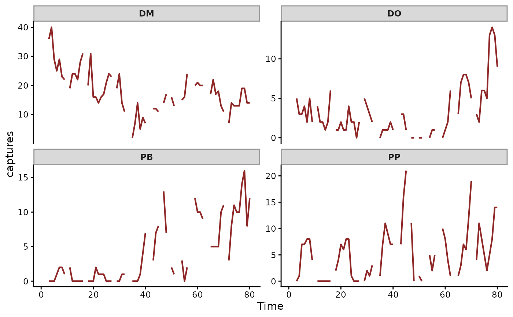

Monthly time series of rodent captures for selected species of the Portal Project, a long-term study of a Chihuahuan Desert ecosystem near Portal, Arizona. Captures are summed across all control plots.
Format
A data.frame containing the following fields:
- time
time of sampling, in lunar monthly cycles
- series
factor identifying the species
- captures
total captures across all control plots at each time
- ndvi_ma12
12-month moving average of the mean Normalised Difference Vegetation Index, a measure of plant greenness
- mintemp
monthly mean of the minimum temperature
See also
mvgam() for a state-space model of these counts and
mvgam_data() to check the data. The
overview article fits one.
Examples
data(portal_data)
mvgam_data(portal_data, y = "captures", family = poisson())
#> ✔ Data check passed for family 'poisson (link = log)'.
#> • series: 4 levels
#> • time: 1 to 80
#> • n obs: 320 (68 NA)
